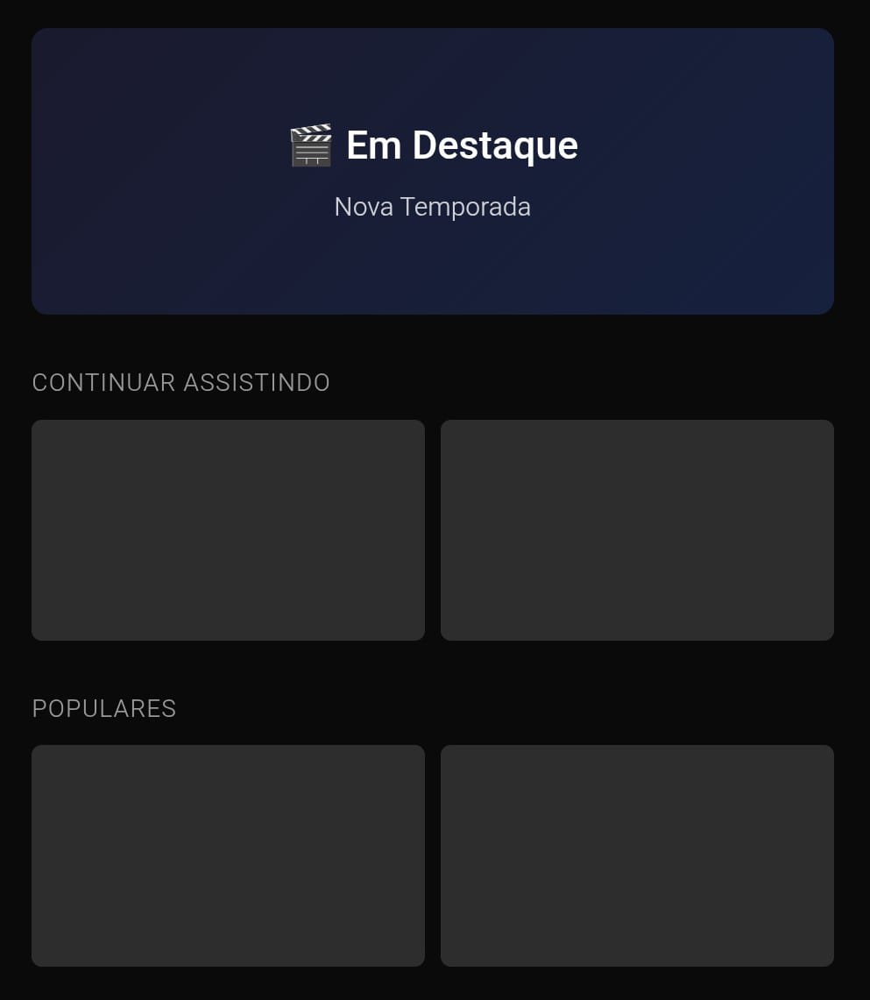
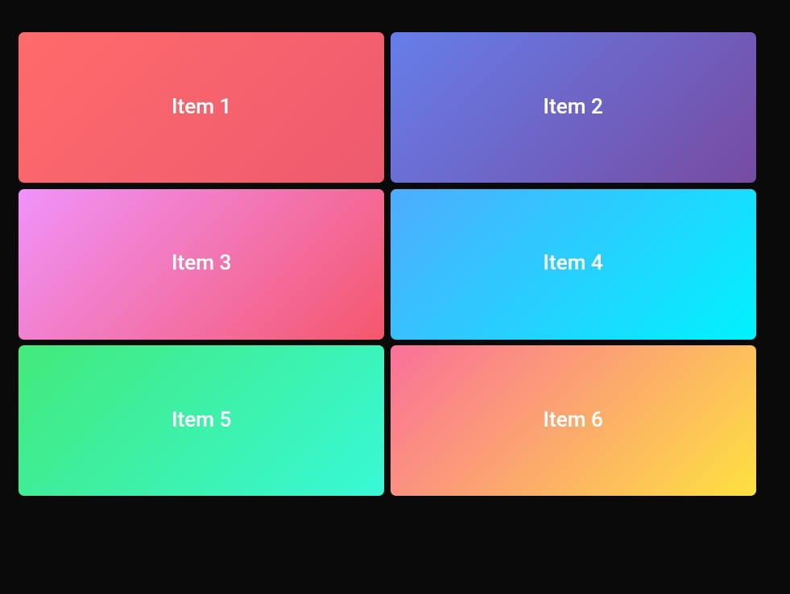

Cores

O modo escuro reduz a intensidade da luz da tela, o que diminui a fadiga ocular ao assistir no escuro. A interface escura também faz o conteúdo do filme se destacar sem brilhos periféricos. Além disso, é necessário ter paleta harmônica e com bom contraste, que facilita a leitura e transmite confiança.
Tipografia
Título Claro e Legível
Este texto usa uma fonte sem serifa, com espaçamento adequado entre linhas (line-height: 1.6) e tamanho de fonte apropriado. Resultado: leitura significativamente mais rápida e melhor compreensão.
Tempo médio de leitura: 12s
Título Decorativo
Este texto usa fonte decorativa difícil de ler com espaçamento ruim. Usuários levam mais tempo para processar e frequentemente desistem da leitura.
Tempo médio de leitura: 19s
A tipografia não serve apenas para legibilidade, ela comunica valores e cria expectativas. Veja este exemplo fictício de um e-commerce de vinhos premium:

Vinho Tinto Chileno Perez Cruz Gran
Note como as fontes elegantes (serifadas) e a paleta de cores sóbrias (vinho escuro + dourado) transmitem exclusividade e sofisticação. Isso é design hedônico: quando elementos visuais provocam respostas emocionais positivas. A mesma estratégia é usada em plataformas de streaming: Netflix e Prime Video usam tipografia limpa e modo escuro para posicionar o conteúdo como produto premium. A escolha visual não é apenas estética, ela aumenta a percepção de qualidade cinematográfica e reduz a fadiga ocular, criando uma experiência mais imersiva.
Hierarquia Visual e Foco
No geral, plataformas de streaming costumam mostrar séries populares ou novas temporadas no topo da tela, com imagens grandes ou banners animados.
 Exemplo de Interface da plataforma de streaming PrimeVideo, da Amazon.
Exemplo de Interface da plataforma de streaming PrimeVideo, da Amazon.
Com Hierarquia Clara ✅
85% dos usuários notam o destaque
Sem Hierarquia Clara ❌
23% dos usuários encontram o conteúdo
Layout
Exemplo fictício de layout com organização limpa, destaque para o conteúdo principal e navegação intuitiva:
Por que funciona?
- ✓ Destaque grande no topo
- ✓ Categorias claras e separadas
- ✓ Espaçamento para tocar fácil
- ✓ Thumbnails grandes (min 48x48px)
Exemplo fictício de layout com organização limpa, destaque para o conteúdo principal e navegação intuitiva:
Por que falha?
- ✗ Tudo misturado
- ✗ Cores conflitantes
- ✗ Itens muito pequenos
- ✗ Difícil tocar certo
Como as percepções visuais influenciam a experiência de usuários em plataformas de streaming de vídeo como Netflix e Amazon Prime Video?
Cada decisão visual impacta diretamente métricas de engajamento, tempo de uso e satisfação. O design não é apenas estética, é estratégia de negócio e experiência do usuário.
94% dos usuários julgam um site pela aparência visual
Fontes ulizadas para os dados desde site:
- Stanford Persuasive Technology Lab (2002) - "How Do People Evaluate a Web Site's Credibility?"
- Nielsen Norman Group - Estudos sobre hierarquia visual e eye-tracking
- Web Content Accessibility Guidelines (WCAG) 2.1
- Dados ilustrativos baseados em princípios estabelecidos de UX/UI Design